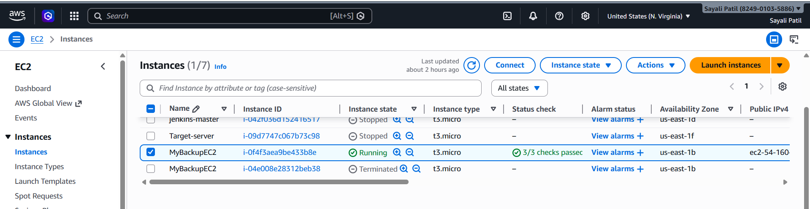
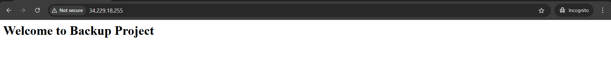
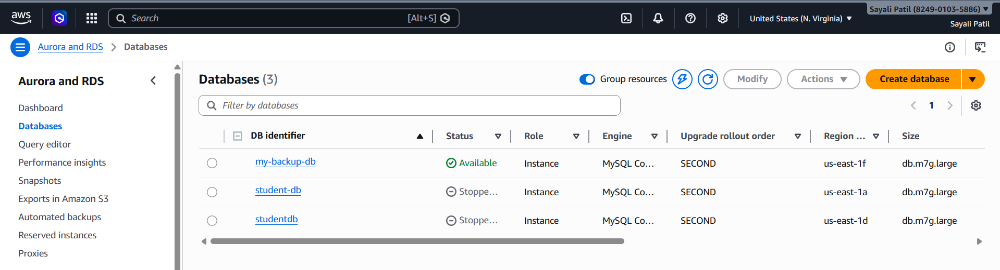
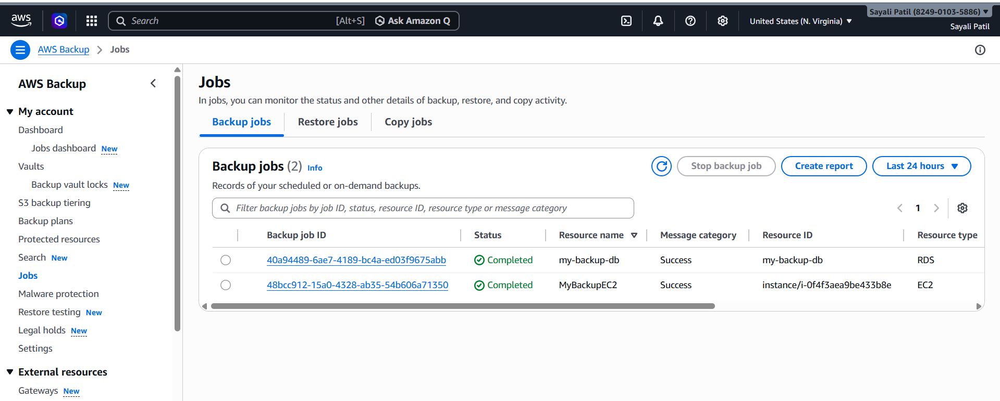

The objective of this project is to learn how to configure and manage automated backup and recovery for cloud resources using AWS Backup. This includes launching an EC2 instance and an RDS database, and protecting them using a centralized backup plan.
✅ EC2 Instance
Launched an EC2 instance(MyBackupEC2) using Amazon Linux
Installed Apache web server
Created a sample HTML file for testing
Commands used:
sudo yum update -y
sudo yum install httpd -y
sudo systemctl start httpd
sudo systemctl enable httpd
echo "Welcome to Backup Project" | sudo tee /var/www/html/index.html


✅ RDS Instance

✅ Backup Vault
Created a backup vault named: MyBackupVault

✅ Backup Plan
Plan Name: EC2-RDS-Backup-Plan
Backup Rule: DailyBackup
Frequency: Daily
Retention Period: 35 days
Lifecycle: Default


✅ Resource Assignment
Assigned resources using Resource ID
Included:
EC2 Instance
RDS Database
IAM Role used: AWSBackupDefaultServiceRole

Verified backup jobs in AWS Backup console
Status confirmed as Completed

Checked backup vault for recovery points
Verified:
This project successfully demonstrates how to implement a centralized backup solution using AWS Backup. Both EC2 and RDS resources were protected, and backups were verified using backup jobs and recovery points.
Hi, I'm Sayali Patil — a passionate Cloud & DevOps Learner ☁️
📧 Email: rajputsayali1104@gmail.com
🔗 LinkedIn: linkedin.com/in/sayali-patil-599464362
🐱💻 Github: https://github.com/iamsayalipatil
✍️ Medium: https://medium.com/@SayaliPatil1104